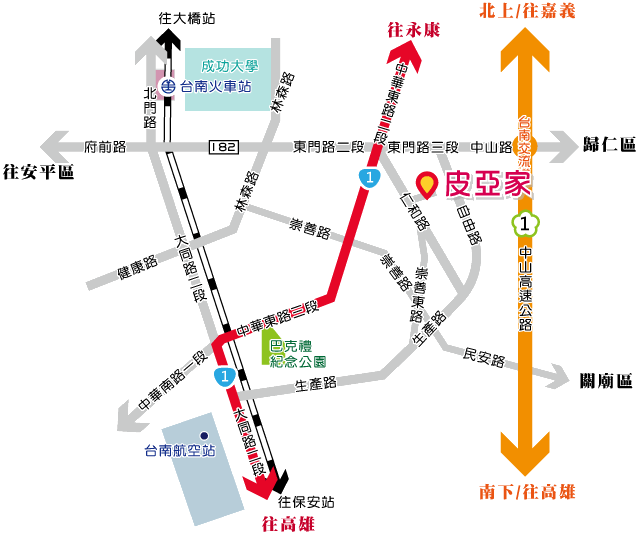

<div class="col-sm-6 col-sm-offset-4 margin_main_content">
              <div id="traffic_content" class="main_content">
				<div class="row">
					<h2 class="title">
						<strong>交通指引</strong>
						<div class="pull-right"><small>尋找巷弄中的皮亞家</small></div>
					</h2>
				</div>
                  <hr class="h_color">
                  <div class="traffic_content">
                      <div class="traffic_img"></div>
                      <div class="traffic_word">
                        <div class="small_title">
                          開車
                        </div>
                        <ul class="small_word">
                          <li>國道一號→下台南交流道→中山路/182縣道→左轉自由路→右轉仁和路→右轉113巷→『台南‧皮亞家』</li>
                        </ul>
                        <div class="small_title">
                          火車、高鐵與客運
                        </div> 
                        <ul class="small_word">
                          <li>搭致火車台南站→搭乘3號公車→崇善五街口→往仁和路方向步行大約五分鐘→『台南‧皮亞家』</li><br>
                          <li>搭致火車台南站→搭乘5號公車→崇德十四街口→往崇德路方向步行大約五分鐘右轉崇德十二街→步行約十分鐘右轉仁和路→『台南‧皮亞家』</li>
                        </ul> 
                      </div>
					  <div class="button_content">
						<div class="row traffic_button_block">
							<div class="col-sm-12">
							<div class="row">
							<div class="col-sm-4 col-xs-4 traffic_button button_1">
								
								<a href="http://twtraffic.tra.gov.tw/twrail/"> 火車轉乘資訊 </a>
							</div>
							<div class="col-sm-4 col-xs-4 traffic_button button_2">
								
								<a href="http://www.thsrc.com.tw/index.html?force=1"> 高鐵轉乘資訊</a>
							</div>
							<div class="col-sm-4 col-xs-4 traffic_button button_3">
								
								<a href="http://2384.tainan.gov.tw/TNWeb/Index.jsp?locale=zh_TW&agis=Yes"> 台南公車資訊</a>
							</div>
							</div>
						</div>
						</div>
					  </div>
                  </div>
              </div>
          </div>